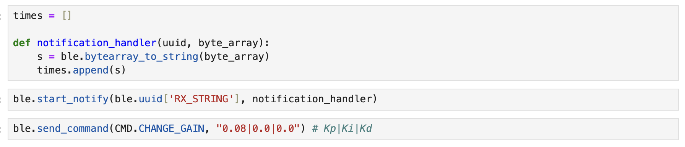
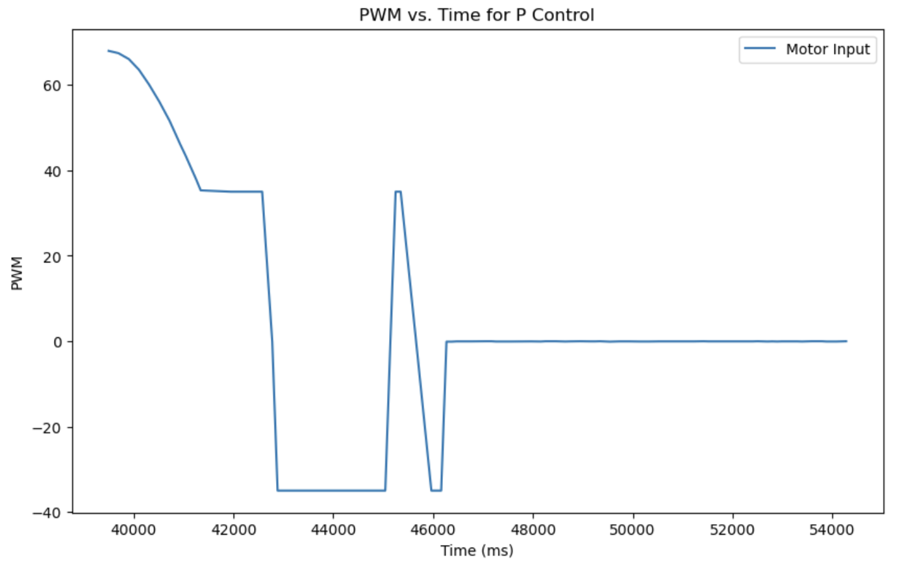
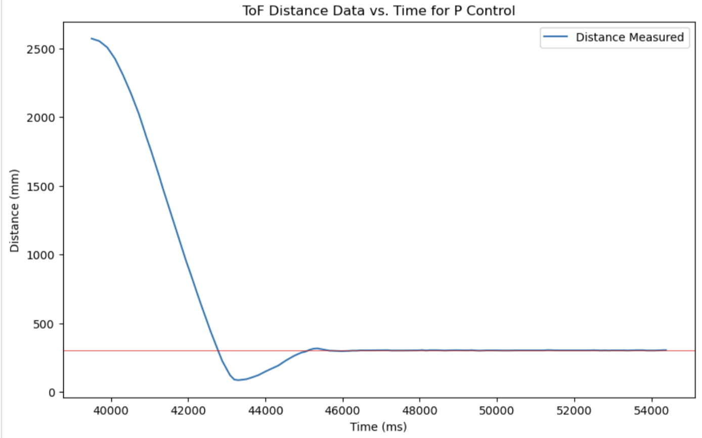
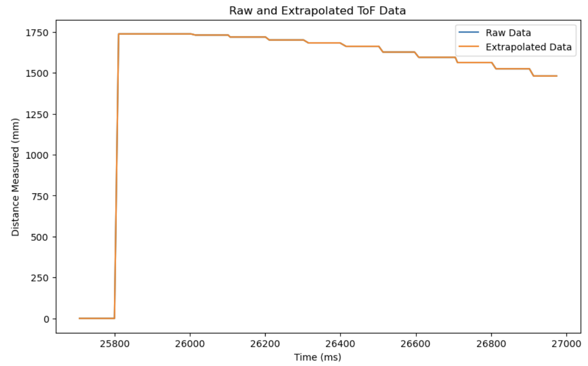

Lab 5: Linear PID Control & Linear Interpolation
Prelab
Before starting the lab, I decided to implement a system for easier debugging using Artemis and Python as advised by the handout. To streamline the process, I created Bluetooth commands that initiate PID control, adjust gain values, and transmit data. This eliminates the need to repeatedly burn code onto the Artemis, making debugging more efficient.
In my Artemis code, I created PID_ON, a boolean variable, ensuring that the PID calculation in the main loop begins only when PID_ON is set to true.
By default, PID_ON is initialized as false, and when the START_PID command is sent to the robot, it toggles PID_ON to true.
Below shows my main loop for P control, and a few helper functions for driving my robot.
Below is the Python command I used to adjust the gain, allowing me to modify the values directly in Jupyter Notebook and send them via BLE. Other commands simply call functions without requiring additional input.
* I realized I didn't add my calibration factor in Lab 4 writeup. calib = 0.92 found experimentally.
Position Control
Disclaimer: I had a lot of trouble with BLE connection after creating too many folders and virtual environments, so if any of the future students happen to be reading this, just add more code to ones that work already to ensure your code doesn't break.
I decided to start with a slow and simple P controller. As seen in the main loop above, I first start the ToF sensor when connected.
Then, when PID_ON is toggled to true, and while control is on, error is calculated, then multiplied to the gain value Kp to calculate motor input.
It then uses the error value to drive the robot forward if error is positive, or backward if error is negative. I also made sure to add a hard stop using a timer in case my commands fail, and to stop control when data storage is full.
For the demo and plots below, I set my maximu PWM value PWM_MAX to 150 and Kp gain to 0.03 to prevent the robot from crashing into the wall so that I can verify my controller works.
This plot shows the change in input to the motor over time.
This plot shows the distance measured by the ToF sensors over time, where the red line is the goal (304 mm away from the wall). We can see that the controller is actually really good for moderate conditions, with very little steady state error.
This is a video for Kp = 0.03, 4 ft away from the wall.
This is a video for Kp = 0.03, 8 ft away from the wall.
But our class is called Fast Robots, not Average Robots. To tackle this, I wanted to add derivative control so that I can speed up my robot without crashing it into the wall. The time is 4:57 am, so I don't think I will be able to do this for now.

Extrapolation
I measured the execution frequency of the main loop and found that it runs 1,171 times over 2 seconds, which corresponds to approximately 585 Hz. Similarly, I tracked the ToF sensor updates and recorded 23 data sets within 2 seconds, indicating a ToF sampling frequency of 11.5 Hz. This significant difference in sampling rates slows down the entire loop since PID calculations currently execute only when new ToF data is available. To improve efficiency, I can use the ToF measurements to extrapolate the robot's position, allowing the system to perform calculations at a higher frequency rather than waiting for new sensor data.
I first decoupled the ToF and the control loop by taking out controller calculations outside the if statement checking if PID_ON is true.
I created two separate arrays of which one contains only ToF data (therefore smaller array), and the other contains control data.
Then, I added helper functions to calculate the estimated distance by multiplying the time difference and the slope of previous readings and adding to the previous distance, and to calculate control using this value.
Below are the helper functions used.
Below is how I decoupled ToF and Control loop.
Below is my attempt to plot raw and extrapolated ToF data. The step-like plot shows that decoupling was a success, but for some reason my extrapolated data was the same as my raw data. The issue seems to be the extrapolated data not updating properly, as the data for raw and extrapolated were the same when I printed them for debugging.
Discussion
This lab was my first time trying to implement PID control in real life. Although I was only able to do P control in time, it was really interesting to see something I've only leanrned in theory happening in real life. Getting the system to work was a huge struggle for me because I had a lot of issued in terms of coding, and I was not able to accomplish everything I wanted to, but I think at least I have a really good understanding of everything, having spent so much time on this lab.
References and Acknowledgements
- Ben Liao, Jeffery Cai, and Evan Leong for being a personal TA
- Sophia Lin for helping me debug, finding my mistakes
- Farrell for answering my numerous questions
- Nila Narayan's website
- Stephan Wagner's website
- ChatGPT for correcting grammar and spelling errors
- Bootstrap template for website